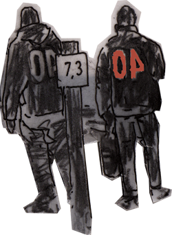

Side Projects
- Weedy - beats and pieces (2009)
- Weedy - 2008 side stuff mix (2008)
- Padmo' - change the channel (2008)
- 40 Winks & M.anifest - EP (2007)
Free Tracks
- Wake Up (Weapons of Hope)
- Melancholia (Extended Pleasure)
- City Dweller (More Than Loops)
- Destination, My Imagination (More Than Loops)
- Do Me A Flavour (More Than Loops)
- Glamour and Glitz (More Than Loops)

Snippets
the Lucid Effect - download (7,9 MB)
Sound Puzzle - download (6,8 MB)
Extended Pleasure - download (1,9 MB)
More Than Loops - download (2,4 MB)
Hit The Hay - download (3 MB)
April To July - download (2,5 MB)
Mixes
monotape show (July 1st 2008) - guest mix
KickSnare (June 16th 2008) - self-portrait mix
Laid Back show (May 31st 2008) - the lucid mix
Live at d'Hiver Rock festival (February 17th 2007) - Interlude Radio Show 252 (115 MB)
Links
40 Winks on Soundcloud - selected songs
40 Winks on Mixcloud - mixes and more mixes
40 Winks on MySpace - online community
40 Winks on YouTube - music videos and live clips
40 Winks on Last.fm - free tracks and 30sec-previews of all tracks
40 Winks on Soundclick - lots of old stuff to download